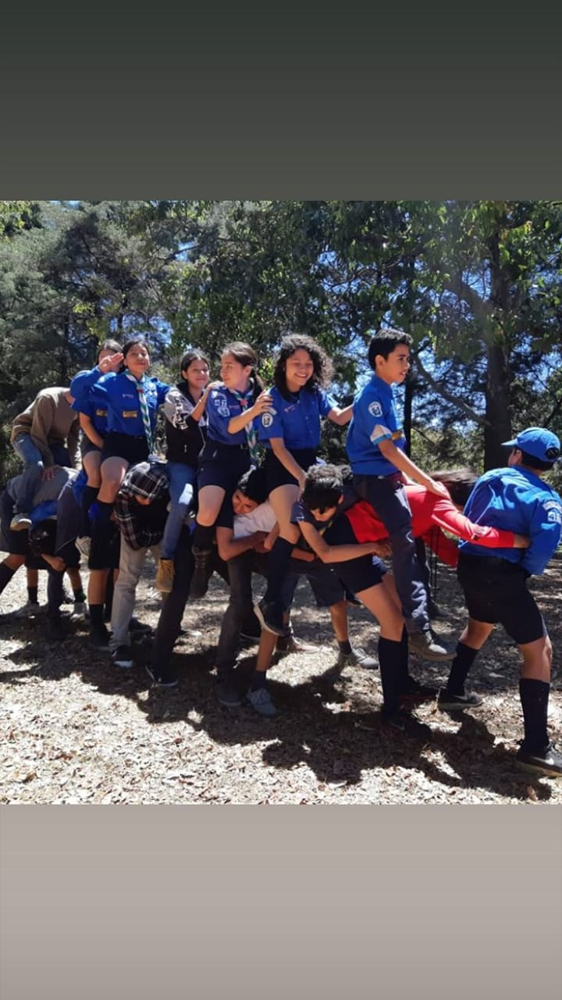

los scout suele ser un grupo de personas las cuales muchos de ellos van a aprender sobre la naturaleza o como salvarse de si mismo sobre algun peligro pero eso no significa que sean inmortales, pero puede ser una forma para conocer a personas y hacer cosas productivas
los scout significa movimiento infantil y juvenil para educar, muchas veces esa clases de actividades suelen ser muy peligrosas o sucias en el sentido que aveces se tienen que tirar al lodo y muchas personas les da asco o no se atreven pero en realidad esa es la diversion
el movimiento scout nacio como una manera de combatir con la delicuencia en la inglaterra ya que el que fundo los scout se llama Robert Stephenson Smith (Baden-Powell mas conocido como BIPI)
hoy en dia en el mundo hay mas de 36.5 millos de scout y cada ves suelen sumarse mas.
lo mas interesante de los scout son los campamentos y los juegos ya que los juegos se tratan sobre adrenalina y muchas personas a veces se rompen un brazo o a veces se raspan pero eso es lo que mas nos gusta a los jovenes divertirnos y mas que todo conocemos lugares donde hay mucha area verde y acampan en aire libre
pero los scout se divide en en 4 partes las cuales son;
en el siguiente link le podemos mostrar como son los scout y sus actividades
Ir a Googleo bien muchos dicen que vendemos galletas o hacemos cosas de aburrida y la verdad no es asi les recomiendo abrir los link para que se pueda entretener un rato
Ir a Googleen mi opion los scout son muy divertidos tiene muy buen sentido del humor y hay muchas personas que salen buenos lideres o bien si llegamos a investigar mas a fondo los scout suelen ayudar de mucho ademas ser scout significa arriesgarse a las cosas nuevas, y ademas a veces cuando alguien ya se mete mas y mas a los scout puede trabajar de eso o incluso puede viajar a algunos paises, sin embargo por motivos de la pandemia se cancelo las actividades
